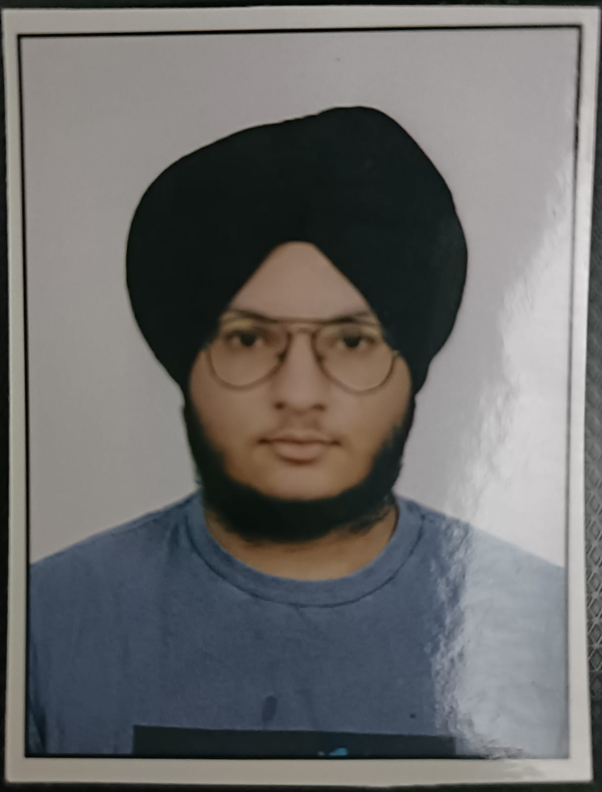

Harshvardhan Singh Khurmi

Summary
Motivated and dedicated college student pursuing a Bachelor of Technology (B.Tech) degree in Computer Sceince. Eager to apply theoretical knowledge gained in the classroom to practical challenges, while
continuously enhancing skills in tech-world. Seeking opportunities for professional growth and development in a
dynamic and innovative environment.
Education
- Matriculation from Blooming Dales International School, Sriganganagar(Raj) (2019)
- Matriculation from Blooming Dales International School, Sriganganagar(Raj) (2021)
- Bachelor of Technology, Computer Science ans Engineering - Malviya National Institute of Technology (2022-2026)
Technical Skills
- Computer Programming Languages: C, C++ (Proficient), python(basic)
- Proficient in Data Structures and Algorithms
- Skilled in Object-Oriented Programming (OOP) for creating modular and scalable software solutions
- Proficient in Database Management Systems, adept at designing and optimizing relational databases using
mySQL
- Competent in Full Stack Web Development with practical skills in front-end and back-end technologies
- Proficient in LaTeX typesetting for document preparation
Scholaristic Achievements
- Ranked in top 0.80% candidate in JEE Mains examination.
- Solved 100+ practice problems on Leetcode and Geeks for geeks.
- School topper in National Science Olympiads (NSO), International Mathematics Olympiad(IMO)
Position of Responsibility
Member, UNAAT BHARAT ABHIYAN (july,2023 - Present)
As a part of the club, I make rural people and children aware of the existing government
policies and schemes, help their words become more ‘digitalized’, give them career counselling
and help them become better citizens of society
Soft Skills
- Team building and cooperative working nature
- Strong inter-personal skills
Other